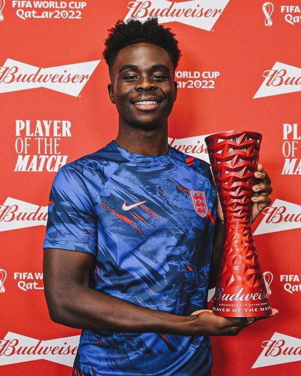
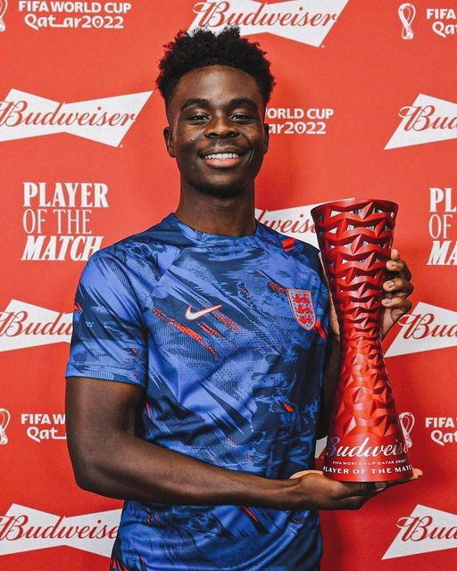
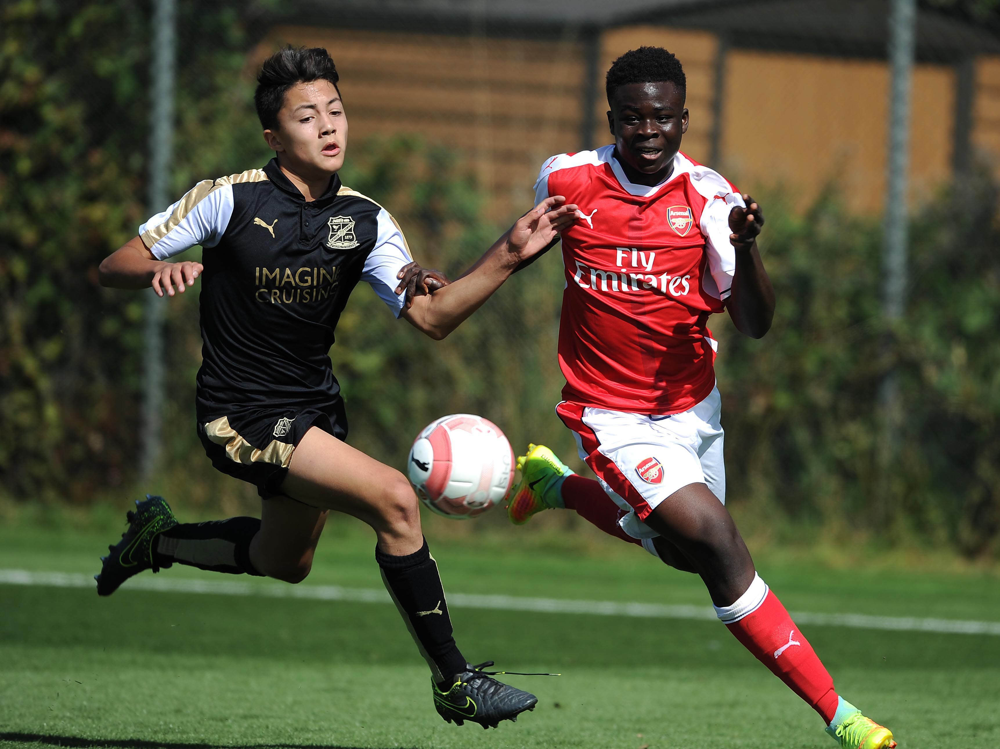
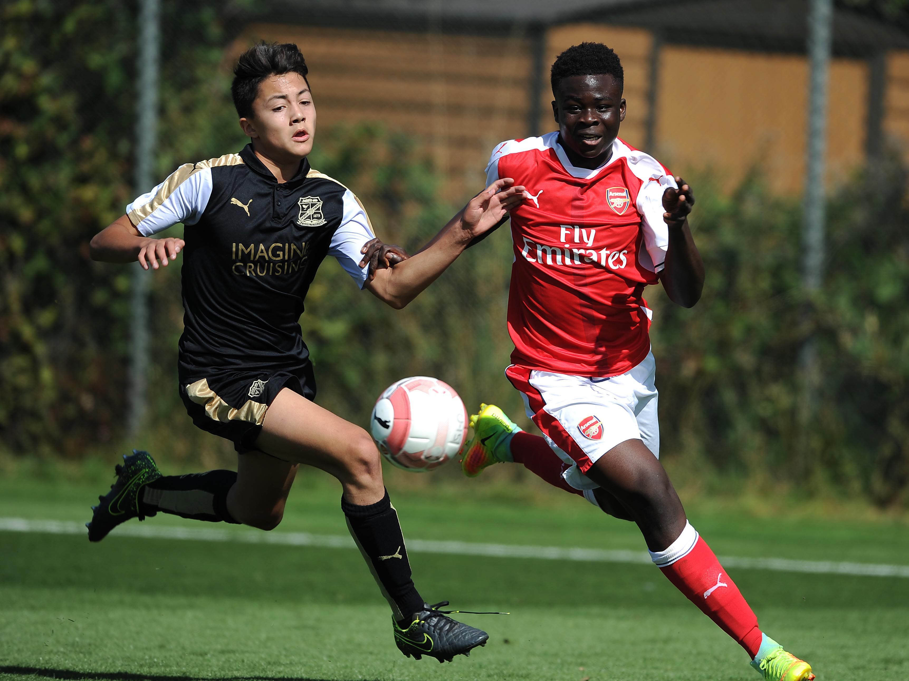

Be like Bukao and join the New Blance Team
.jpg) FA Cup Winner (2019-2020): Saka played a significant role in Arsenal's FA Cup triumph during the 2019-2020 season, contributing to the team's success with his performances.
Community Shield Winner (2020): He was part of the Arsenal squad that won the FA Community Shield in 2020, adding another trophy to his collection.
FA Cup Winner (2019-2020): Saka played a significant role in Arsenal's FA Cup triumph during the 2019-2020 season, contributing to the team's success with his performances.
Community Shield Winner (2020): He was part of the Arsenal squad that won the FA Community Shield in 2020, adding another trophy to his collection.
 Saka joined Arsenal's youth academy at a young age, showcasing immense talent and potential.
He progressed through the ranks of Arsenal's youth system, demonstrating his versatility and adaptability on the field.
Saka joined Arsenal's youth academy at a young age, showcasing immense talent and potential.
He progressed through the ranks of Arsenal's youth system, demonstrating his versatility and adaptability on the field.